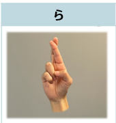
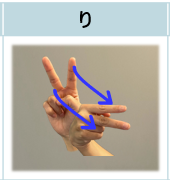
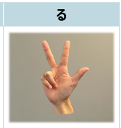
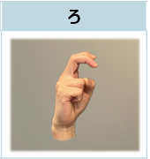

ら
「ら」の指文字
中指と人差し指を立ててからませます。これはアルファベットの｢r｣の指文字と同じです。

り
「り」の指文字
人差し指と中指の2本を立てて、手首をスナップさせる感じで表現します。これはカタカナの「リ」の形が由来になっています。

る
「る」の指文字
開いた手のひらの小指と薬指だけを折り曲げます。これはカタカナの「ル」の形が由来になっています。
れ
「れ」の指文字
親指と人差し指でアルファベットの「L」の形を作ります。これはカタカナの「レ」の形が由来になっています。

ろ
「ろ」の指文字
小指を相手側に向けて握り、人さし指と中指を“カギ形”に曲げます。これはカタカナの「ロ」の形が由来になっています。